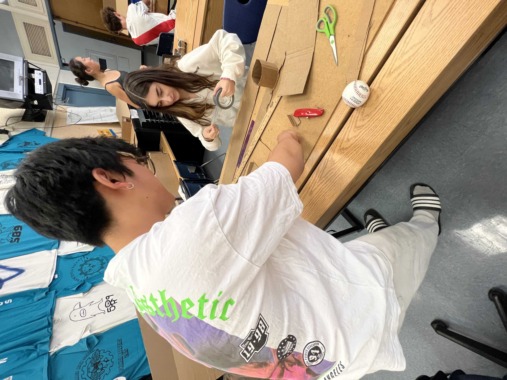

Intro to Engineering Journal

8/25/23 - During this day, our class encountered a challenge to utilize eight pipes to transfer a ball into a bucket. Although we had eight pipes, there were more people than pipes. This made us create a strategy to successfully bring the marble to the marbe with the involvement of everyone. Although we failed at first, we started getting used to it and created the plan to bring the pipes at a flatter slope in order to safely bring the marble into the bucket. With this challenge, I have learned that I must rely on others sometimes in order to successfully fulfill a task.
9/11/23 - During this day, we took a quiz about mechanical engineering. We also used tinkercad to create a design for our project. By using tinkercad, we can learn knowledge about how to use programming for engineering. Tinkercad also allowed us to create prototypes for our project and test certain ideas if the project will work with a certain idea. We have also created some part of the project with cardboard. 
9/25/23 We were working on a project that focused on moving a ball in a certain structure that people made in order to pop a balloon. Although we had some trouble with time and efficiency, we figured out how to work together and create a tower that will hold up the ball and its impact. The structure that we created had three inclined slides, a lever, and platforms to slow the impact of the ball. After some tries, we successfully managed the ball to reach the lever and allow the needle to pop the balloon.
9/29/23 Today, we dissected a computer and separated all the parts from the computer. Although we had some trouble at the start, the proccess of dissecting the computer was smoother than expected. By dissecting the computer, we learned the parts of the computer and some of their function within the computer. This helps us to learn more about engineering with computer and helps us decide if we like the computer route of engineering. After we dissected the computer, we successfully reassembled the computer to see how other computer engineers assembles a computer.


10/6/23 Today, we made a prosthetic hand with the material of rubberbands, cardboard, tape, and strings. Although we had trouble trying to get an agreeable idea, we figured out to create four cardboard rectangles for the fingers and strap it with a string with rubberbands tied to it in order to control the fingers. Then we taped the finger with a "hand" (a big cardboard rectangle) to maintain where the finger can go. After several attempts, we successfully held the water bottle with our prosthetic hand. By doing this project, we learned more about bioengineering and the actions of bioengineer person that is building prosthetics.

10/20/23 Today, we created a bottle rocket with the materials of a cardboard and a bottle. We attempted to make the bottle rocket to launch in the air for a period of time. The hardest part of building the bottle rocket was figuring out what our bottle rocket should have been built like. Our group decided to put three cardboard on the side as fins to help the rocket launch and have a paper cone on the top as the nose cone. As we launched the rocket, we saw how our rocket went up for a few seconds. By doing this project, we learned how ariel engineering takes a lot of time and energy, and also shows how each parts is needed in order to direct a rocket.
10/27/23 Today, we attempted to create a water filtration by utilizing a bottle, cotton, rocks, and sand. Although we did not manage to succesfully filter the dirty water, we still managed to get the dirt away from the water. For the filtration system, we first put cotton then sand and then the rocks. By doing this lab, I noticed how filtrations are vital for people and how engineers must do it to help the people and earth.
11/3/23 Today, we have created prototypes for our circuit. We have learned this for electrical engineering and learned how there are different types of circuit. There is also different types of current like ac and dc. The struggles for the prototype circuits were how to exactly light up the bulbs and which wire must go to which in order to create a circuit. By doing this prototype, I noticed the struggles for electrical engineers and how circuits are created from different parts such as a battery, wires, resistors and more. I have also learned the Ohm's law which is I = VR.